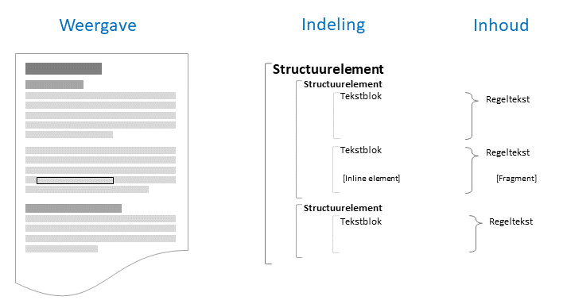

Tekststructuur en -inhoud
De standaard gebruikt verschillende modellen om (juridische) tekst te beschrijven.

Een lezer ziet de tekst als een doorlopend verhaal (lichtgrijs) dat is onderverdeeld in secties die herkenbaar zijn aan een kop of label (donkergrijs). Binnen het verhaal kan tekst een speciale opmaak hebben, bijvoorbeeld in de vorm van een lijst of een link naar andere teksten. Daarnaast kunnen multimediale elementen (zoals figuren) onderdeel zijn van de tekst.
Ter ondersteuning van de weergave kent STOP een model waarin de structuur van de tekst beschreven is. De verhalende tekst wordt daarin opgedeeld en beschreven met tekstblokken, waarin teksten met een speciale opmaak en multimediale elementen via inline elementen binnen het tekstblok gemodelleerd worden. De secties worden beschreven via structuurelementen (zoals een hoofdstuk) met als inhoud de tekstblokken en structuurelementen van subsecties. Zo ontstaat een hiërarchisch model van de tekst dat in STOP als basis dient voor het uitwisselen van teksten. De indeling van de tekst kent verschillende variaties, zoals tekst met artikelstructuur die voor juridische regelingen gebruikt wordt en een vrijetekststructuur die voor onder andere visiedocumenten beschikbaar is.
Een lezer kan uit het doorlopende verhaal afleiden waar de tekst over gaat. Om de inhoud voor software begrijpelijk te maken kent STOP onder de noemer van regelgeving-gerelateerde informatie verschillende vormen of typen van (machine-leesbare) informatie, zoals "annotaties". De regelgeving-gerelateerde informatie is weliswaar gerelateerd aan de tekst waarvan deze inhoud beschrijft; modelmatig is deze informatie gescheiden van de tekst. Om de regelgeving-gerelateerde informatie te kunnen koppelen aan juridische tekst, verdeelt STOP die lopende tekst in opeenvolgende regelteksten. Een regeltekst is een zelfstandig leesbaar stuk tekst met een interne inhoudelijke samenhang, waarin bijvoorbeeld één of meer juridische of andere regels worden beschreven. Afhankelijk van de aard van de regelgeving-gerelateerde informatie zal deze informatie gerelateerd zijn aan een regeltekst en/of aan een fragment van de regeltekst; dit is bij het model voor de annotatie beschreven.
In de verschillende tekstmodellen komt de scheiding tussen indeling en inhoud steeds terug: er zijn structuurelementen die over de indeling gaan en zelf geen inhoud (en dus geen regelgeving-gerelateerde informatie) hebben, en regeltekstelementen die wel inhoud hebben en waar annotaties aan gekoppeld kunnen worden. In STOP fungeren de volgende elementen als regeltekst: